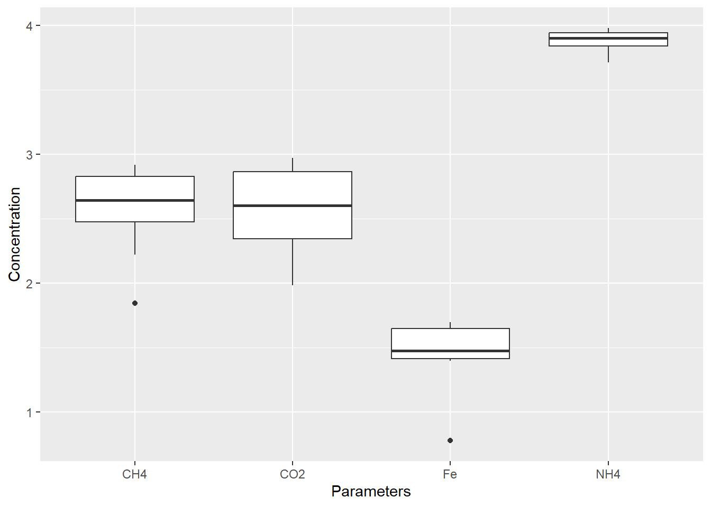
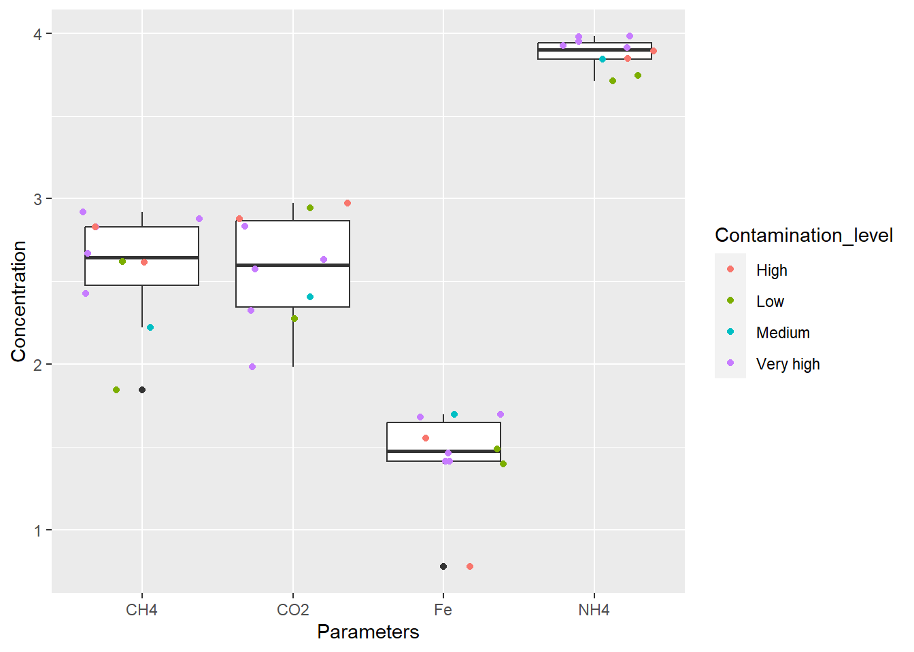
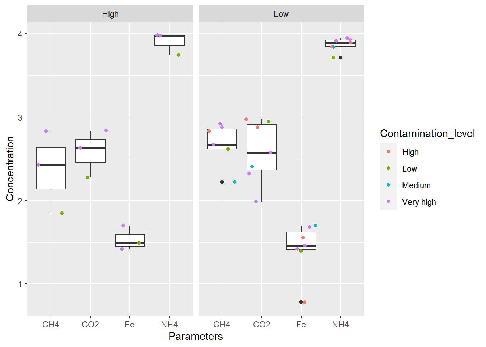
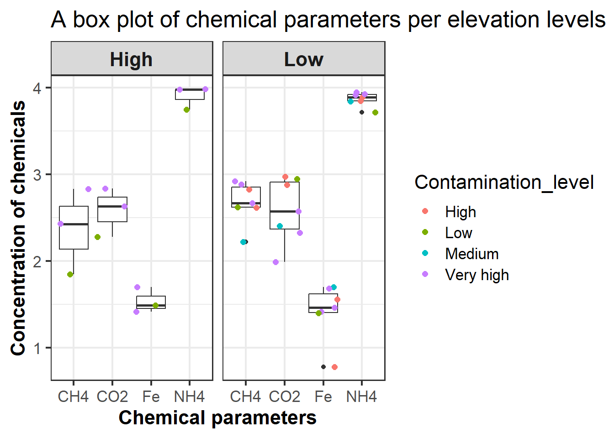

Plotting your data
R has a basic function to graph data, this is done with the plot function. Here is an example of a scatter plot using the plot function.
plot(x=df2$NH4,y=df2$CO2, xlab = "NH4", ylab = "CO2", main = "A scatter plot")
As you can see the resulting graph is…OK. Luckily the tidyverse has a package that makes plotting graphs in R a whole lot better.
Potting data with the ggplot2 package
The ggplot2 is a part of the Tidyverse packages. It’s strength is that it allows to build graphs layer by layer based on the grammer of graphics.
All plots generated by ggplot2 require the same three components:
- A data set
- A list of coordinates
- geoms - a set of marks that determines the geometry of the plot (e.g. box-plot, scatter plot)
As always ggplot2 has a great cheetsheet.
Basic ggplot2 plot
The plotting function in the ggplot2 package is ggplot, every plot starts with it. In it you specify the data set the plot will use as well as the x and y coordinates. On top of the basic information you add geoms, i.e. what graph element to add. Elements of the graphs are added using the + sign.
Here is an example of a basic box plot
#ggplot works best with long tables, lets first convert df2 and log transform so that the diferences in values between chaicals will not be huge
df3l <- df2 %>% gather(key = Parameters, value = Concentration, 3:6) %>%
mutate(Concentration = log10(Concentration))
#Lets generate the box plot.
#First start with ggplot and specify which data to use.
#The axis are specefied under the aes argument.
plot1 <- ggplot(data = df3l, aes(x=Parameters, y=Concentration))+
geom_boxplot()
plot1
This is a nice plot, but it is possible to add more information to it. For example overlay each observation (i.e. observation from each site) on the box plot using the geom_jitter function
#Let's overlay each observation on top of the box plot, this will allow you to see where the
#observation fall, and how many observations are in each category.
#On top of it, we will color each observation by the level of contamination in the site
#from which it came
plot2 <- ggplot(data = df3l, aes(x=Parameters, y=Concentration))+
geom_boxplot()+
geom_jitter(aes(color = Contamination_level))
plot2
That is a nice graph, now lets see how to split a graph to panels by category (e.g. elevation).
#Facet_wrap allows you to split a graph into facets
plot3 <- ggplot(data = df3l, aes(x=Parameters, y=Concentration))+
geom_boxplot()+
geom_jitter(aes(color = Contamination_level))+
facet_wrap(~Elevation)
plot3
Lastly, let’s take care of the cosmetics. ggplot has a set of built-in themes, the default is classic view. However it’s possible to change them using them_x, and further customize them using the theme function. The plot and axis title can also be modified.
# here I used theme_bw to switch to a black and white theme the base size argument changes font
#size
#I then used the theme function to further costumize the polt. Strip.text are the title of each facrt and axis.title are the title of the axis
#Basically every aspect of the graph can be modefied using theme or other functions
plot4 <- ggplot(data = df3l, aes(x=Parameters, y=Concentration))+
geom_boxplot()+
geom_jitter(size=2,aes(color=Contamination_level))+
facet_wrap(~Elevation)+
theme_bw(base_size = 16)+
theme(strip.text = element_text(size = 16, face = "bold"),
axis.title = element_text(face = "bold"))+
xlab("Chemical parameters")+
ylab("Concentration of chemicals")+
ggtitle("A box plot of chemical parameters per elevation levels")
plot4